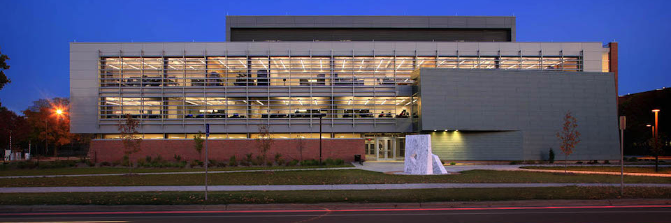
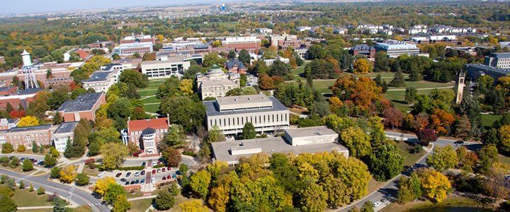
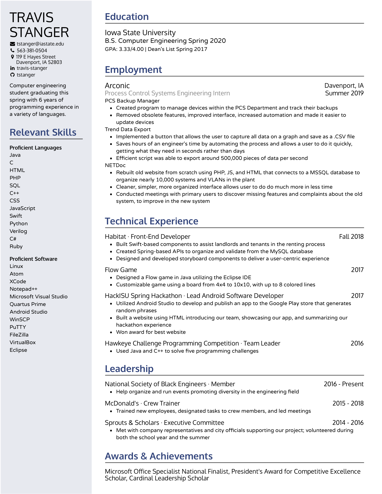

Intro
My name is Travis Stanger. I'm a Senior in Computer Engineering studying at Iowa State University, graduating in May 2020.
I was born in Davenport, Iowa, where I have lived for my entire life. I graduated from Davenport Central High School in June 2016, and began attending Iowa State University in August 2016.
Career Objective

Work

My employment history begins in July 2015, when I began working at McDonald's at the age of 17. I began as a Crew Member, but quickly was promoted to Crew Trainer in October 2015. I worked nearly full-time during my first Summer here, and cut back to part time during the school year. Upon graduation from high school, I began working full time during Summer 2016 before I quit to head to college in August. Since graduating from high school, I have returned to work at McDonald's full time for all Summer and Winter breaks.
In October 2018, my career at McDonald's officially came to a close, as I was offered an internship with Arconic, formerly known as Alcoa, at their Davenport Works Facility. During the Summer of 2019, I worked as a Process Control Systems Engineering Intern. Following my internship, I was offered and accepted a return offer to come back full time as a computer engineer.
Projects
Senior Design Project (FA19-SP20)
During the Fall 2018 semester, my group and I worked on our iOS app, Habitat. For this project, we decided to develop an application that would enable tenants and landlords to more easily communicate. We initially came up with this idea during a team meeting near the beginning of the semester, where we just brainstormed different ideas. We decided on this project because it seemed like it would be the most useful. During this project, I learned a lot about using Xcode and coding in Swift. Additionally, I learned how to use git and SQL, and this was my first major project working in a team. Some key features that we implemented were login and signup screens with validation, a profile screen that displayed all relevant information depending on the user's usertype, a profile edit screen that allowed the user to set their type, add a landlord (if tenant), edit owned properties (if landlord), and set a varity of other user information. On this screen we also included a button that would enable a dark mode. Our core feature was maintenance requests, which tenants would submit, and it would notify their landlord. They could also include images of the issue using the augmented reality camera that we developed. My role in this project was a Front-End Developer, and I primarily worked on the user interface for the app.
Project3
During the Fall 2018 semester, my group and I worked on our iOS app, Habitat. For this project, we decided to develop an application that would enable tenants and landlords to more easily communicate. We initially came up with this idea during a team meeting near the beginning of the semester, where we just brainstormed different ideas. We decided on this project because it seemed like it would be the most useful. During this project, I learned a lot about using Xcode and coding in Swift. Additionally, I learned how to use git and SQL, and this was my first major project working in a team. Some key features that we implemented were login and signup screens with validation, a profile screen that displayed all relevant information depending on the user's usertype, a profile edit screen that allowed the user to set their type, add a landlord (if tenant), edit owned properties (if landlord), and set a varity of other user information. On this screen we also included a button that would enable a dark mode. Our core feature was maintenance requests, which tenants would submit, and it would notify their landlord. They could also include images of the issue using the augmented reality camera that we developed. My role in this project was a Front-End Developer, and I primarily worked on the user interface for the app.
Habitat (FA18)
During the Fall 2018 semester, my group and I worked on our iOS app, Habitat. For this project, we decided to develop an application that would enable tenants and landlords to more easily communicate. We initially came up with this idea during a team meeting near the beginning of the semester, where we just brainstormed different ideas. We decided on this project because it seemed like it would be the most useful. During this project, I learned a lot about using Xcode and coding in Swift. Additionally, I learned how to use git and SQL, and this was my first major project working in a team. Some key features that we implemented were login and signup screens with validation, a profile screen that displayed all relevant information depending on the user's usertype, a profile edit screen that allowed the user to set their type, add a landlord (if tenant), edit owned properties (if landlord), and set a varity of other user information. On this screen we also included a button that would enable a dark mode. Our core feature was maintenance requests, which tenants would submit, and it would notify their landlord. They could also include images of the issue using the augmented reality camera that we developed. My role in this project was a Front-End Developer, and I primarily worked on the user interface for the app.
CprE288 Roomba Project (SP18)
During the Fall 2018 semester, my group and I worked on our iOS app, Habitat. For this project, we decided to develop an application that would enable tenants and landlords to more easily communicate. We initially came up with this idea during a team meeting near the beginning of the semester, where we just brainstormed different ideas. We decided on this project because it seemed like it would be the most useful. During this project, I learned a lot about using Xcode and coding in Swift. Additionally, I learned how to use git and SQL, and this was my first major project working in a team. Some key features that we implemented were login and signup screens with validation, a profile screen that displayed all relevant information depending on the user's usertype, a profile edit screen that allowed the user to set their type, add a landlord (if tenant), edit owned properties (if landlord), and set a varity of other user information. On this screen we also included a button that would enable a dark mode. Our core feature was maintenance requests, which tenants would submit, and it would notify their landlord. They could also include images of the issue using the augmented reality camera that we developed. My role in this project was a Front-End Developer, and I primarily worked on the user interface for the app.
Reflections

Below you will find links to all of the reflections completed during my time at Iowa State University, as well as the Ethics Essay, completed during CprE 394.
Ethics Essay
Contemporary Issues Reflection
General Education Reflection
Cumulative Reflection
Résumé
